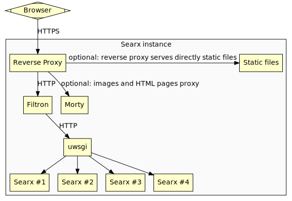

Architecture¶
Herein you will find some hints and suggestions about typical architectures of searx infrastructures.
We start with a contribution from @dalf. It shows a reference setup for public searx instances which can build up and maintained by the scripts from our Admin’s tooling box.

Fig. 1 Reference architecture of a public searx setup.¶